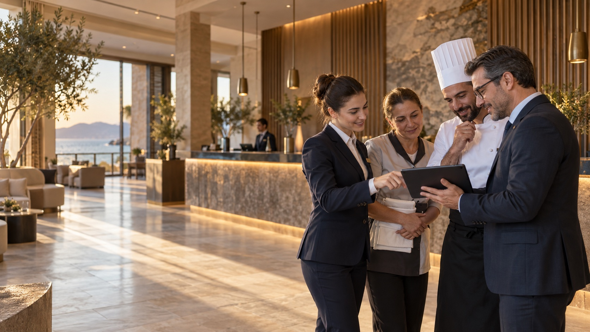

Vardiya devri eksiksiz
Gece ve gündüz ekiplerinin vardiya planı, izinleri ve eksik kadro uyarıları bir arada.
Otel operasyonunun gerçek ritmi
HMS People, otelcilikteki kesintisiz çalışma düzenini ve departman bağımlılıklarını insan kaynakları süreçlerine taşır.

Gerçek kullanım senaryoları
Ön Bürodan Kat Hizmetlerine, Yiyecek & İçecekten Teknik Servise kadar sorumluluklar aynı sistemde tanımlanır.
Gece ve gündüz ekiplerinin vardiya planı, izinleri ve eksik kadro uyarıları bir arada.
Sezon ve doluluk temposuna göre kadro görünürlüğü ve hızlı görev değişimi.
Yoğun etkinlik günlerinde çalışma süresi, puantaj ve yönetici onayı bağlantılı.
Tüm departmanların kadro, talep ve performans görünümü güncel kalır.